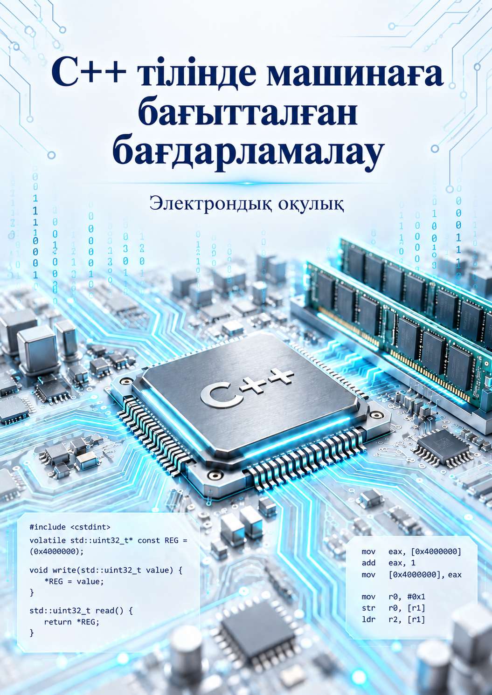

ЭЛЕКТРОНДЫҚ ОҚУЛЫҚ · АСТАНА · 2026
С++ тілінде машинаға бағытталған бағдарламалау
Теориялық дәрістер, зертханалық жұмыстар және білімді бақылау материалдары бір жерде.

Теориялық дәрістер, зертханалық жұмыстар және білімді бақылау материалдары бір жерде.